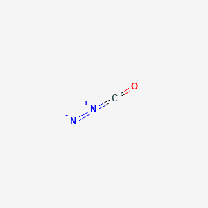

Created By
G.Satheesh
WOLFF MOLECULAR REARRANGEMENT
The Wolff rearrangement is an organic reaction used to convert an α-diazo ketone to a ketene using a silver oxide catalyst, light, or thermal conditions. The mechanism of the Wolff rearrangement is essentially one step which is initiated by the catalyst. The reaction involves a 1,2-shift to form the ketene product and release a molecule of nitrogen gas. Subsequent attacks by nucleophiles to the ketene formed are also considered Wolff rearrangement.
Mechanism :
Molecular rearrangement:
When the temperature of a polymer is raised, there results an increase in internal energy. The increased energy allows the polymer segments to rotate and slip past one another, which results in large-scale molecular rearrangements. Larger molecules rearrange more slowly than smaller ones.
Origin for wolff
The reaction was discovered by Ludwig Wolff in 1902.
Named after : Ludwig Wolff.
Reaction type : Organic redox reaction.
Meaning for underline words
Diazoketone ( CN2O ) - Molecular Weight : 56.024 
Ketene ( CH2CO ) - Molecular Weight : 42.04

🤔 For General knowledge:
The Airbag was discovered by American John W. Hetrick and German engineer Walter Linderer.The First airbag designed on 1968. Car accident was reduced 23% on 1985 to 1993 , because airbag system. In India here after every car should install 6 airbag , because government ordered. Airbag activated on when suddenly reduced the acceleration. Here there have specific ship for airbag activation. The ship sent 12v to inflator. The sodium azide to explode and convert to nitrogen gas inside the airbag. There 130 grams of sodium azide produces about 67 liters of nitrogen gas which can inflate a normal airbag immediately (in 0.03 s!!). Airbag releasing speed is 300KMPH.
10NaN3 + 2KNO3 -----> K₂O + 5Na₂O+ 16N₂
NaN3 - Sodium azide
KNO3 - Potassium nitrate
K₂O - Potassium oxide
Na₂O - Sodium oxide
N₂ - nitrogen gas₂
Thank you